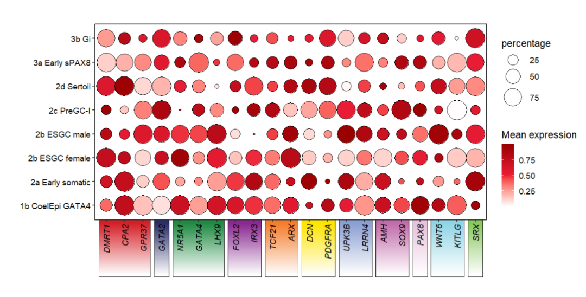

Chapter 11 gradient color rect introduction
Here I use the rasterGrob function instead of rectGrob in grid package to acheive a rect annotation with a gradient filled colors which can make your rect annotation much pretty.
relavent parameters:
- trun on continuesRect == TRUE.
11.1 Examples
Let’s see an exampe with normal rect annotation:
library(jjAnno)
# load test data
data(pdot)
# normal example
annoRect(object = pdot,
annoPos = 'botomn',
aesGroup = T,
aesGroName = 'class',
yPosition = c(-2,0.4),
rectWidth = 0.8)Add a gradient filled color rect annotation:
# add continues color rect
annoRect(object = pdot,
annoPos = 'botomn',
aesGroup = T,
aesGroName = 'class',
yPosition = c(-2,0.4),
rectWidth = 0.8,
continuesRect = T)Add border to rect:
# add border to rect
annoRect(object = pdot,
annoPos = 'botomn',
aesGroup = T,
aesGroName = 'class',
yPosition = c(-2,0.4),
rectWidth = 0.8,
continuesRect = T,
border = T)Reverse the gradient color:
# reverse color vertically
annoRect(object = pdot,
annoPos = 'botomn',
aesGroup = T,
aesGroName = 'class',
yPosition = c(-2,0.4),
rectWidth = 0.8,
continuesRect = T,
border = T,
revColV = T)
Add to left:
# add to left
annoRect(object = pdot,
annoPos = 'left',
aesGroup = T,
aesGroName = 'cellGroup',
xPosition = c(-4,0.4),
rectWidth = 0.8,
continuesRect = T)You can use revColH to control the colors to be arranged horizontally:
# reverse color horizontally
annoRect(object = pdot,
annoPos = 'left',
aesGroup = T,
aesGroName = 'cellGroup',
xPosition = c(-4,0.4),
rectWidth = 0.8,
continuesRect = T,
revColH = T,
revColV = T,
border = T)You can also supply your own colors to fill in rect with a list:
library(RColorBrewer)
# add own color
annoRect(object = pdot,
annoPos = 'left',
aesGroup = T,
aesGroName = 'cellGroup',
xPosition = c(-4,0.4),
rectWidth = 0.8,
continuesRect = T,
revColH = T,
revColV = T,
conRectCol = list(brewer.pal(11,'BrBG')[3:9],
brewer.pal(11,'PRGn')[3:9],
brewer.pal(11,'PiYG')[3:9]))Gradient color rect also can be applied on facet plot:
# facet plot
data("pdotfc")
pfacet1 <-
pdotfc +
facet_wrap(~class,
nrow = 1,scales = 'free_x') +
theme(axis.text.y = element_text(margin = margin(l = 1,unit = 'cm')))
# add to left
annoRect(object = pfacet1,
annoPos = 'left',
aesGroup = T,
aes_x = 'gene',
aes_y = 'cell',
aesGroName = 'cellGroup',
myFacetGrou = 'Early supporting',
xPosition = c(-6,0.4),
rectWidth = 0.9,
continuesRect = T,
revColH = T,
revColV = T,
border = T)